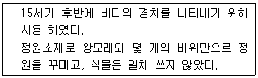
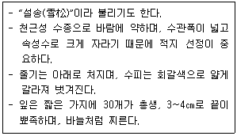
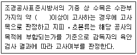
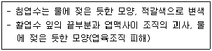

조경기능사 (2015-07-19 기출문제)
1과목: 조경일반
1. 다음 중 색의 삼속성이 아닌 것은?
- 색상
- 명도
- 채도
- 대비
(정답률: 84%)

2. 다음 중 기본계획에 해당되지 않는 것은?
- 땅가름
- 주요시설배치
- 식재계획
- 실시설계
(정답률: 72%)
3. 다음 중 서원 조경에 대한 설명으로 틀린 것은?
- 도산서당의 정우당, 남계성원의 지당에 연꽃이 식재된 것은 주렴계의 애련설의 영향이다.
- 서원의 진입공간에는 홍살문이 세워지고, 하마비와 하마석이 놓여진다.
- 서원에 식재되는 수목들은 관상을 목적으로 식재되었다.
- 서원에 식재되는 대표적인 수목은 은행나무로 행단과 관련이 있다.
(정답률: 63%)
4. 일본의 정원 양식 중 다음 설명에 해당하는 것은?

- 다정양식
- 축산고산수양식
- 평정고산수양식
- 침전조정원양식
(정답률: 74%)
5. 다음 중 쌍탑형 가람배치를 가지고 있는 사찰은?
- 경주 분황사
- 부여 정림사
- 경주 감은사
- 익산 미륵사
(정답률: 70%)
6. 다음 중 프랑스 베르사유 궁원의 수경시설과 관련이 없는 것은?
- 아폴로 분수
- 물극장
- 라토나 분수
- 양어장
(정답률: 77%)
7. 다음 설계 도면의 종류 중 2차원의 평면을 나타내지 않는 것은?
- 평면도
- 단면도
- 상세도
- 투시도
(정답률: 69%)
8. 중국 옹정제가 제위 전 하사받은 별장으로 영국에 중국식 정원을 조성하게 된 계기가 된 곳은?
- 원명원
- 기창원
- 이화원
- 외팔묘
(정답률: 71%)
9. 자유, 우아, 섬세, 간접적, 여성적인 느낌을 갖는 선은?
- 직선
- 절선
- 곡선
- 점선
(정답률: 94%)
10. 다음 중 휴게시설물로 분류할 수 없는 것은?
- 퍼걸러(그늘시렁)
- 평상
- 도섭지(발물놀이터)
- 야외탁자
(정답률: 87%)
11. 파란색 조명에 빨간색 조명과 초록색 조명을 동시에 켰더니 하얀색으로 보였다. 이처럼 빛에 의한 색채의 혼합 원리는?
- 가법혼색
- 병치혼색
- 회전혼색
- 감법혼색
(정답률: 87%)
12. 이집트 하(下)대의 상징 식물로 여겨졌으며, 연못에 식재되었고, 식물의 꽃은 즐거움과 승리를 위미하여 신과 사자에게 바쳐졌었다. 이집트 건축의 주두(柱頭) 장식에도 사용되었던 이 식물은?
- 자스민
- 무화과
- 파피루스
- 아네모네
(정답률: 80%)
13. 조경분야의 기능별 대상 구분 중 위락관광시설로 가장 적합한 것은?
- 오피스빌딩정원
- 어린이공원
- 골프장
- 군립공원
(정답률: 82%)
14. 벽돌로 만들어진 건축물에 태양광선이 비추어지는 부분과 그늘진 부분에서 나타나는 배색은?
- 톤 인 톤(tone in tone) 배색
- 톤 온 톤(tone on tone) 배색
- 까마이외(camaïeu) 배색
- 트리콜로르(tricolore) 배색
(정답률: 73%)
15. 골프장에서 티와 그린 사이의 공간으로 잔디를 짧게 깎는 지역은?
- 해저드
- 페어웨이
- 홀 커터
- 벙커
(정답률: 87%)
2과목: 조경재료
16. 골재의 함수상태에 관한 설명 중 틀린 것은?
- 골재를 110℃정도의 온도에서 24시간 이상 건조시킨 상태를 절대건조 상태 또는 노건조 상태(oven dry condition)라 한다.
- 골재를 실내에 방치할 경우, 골재입자의 표면과 내부의 일부가 건조된 상태를 공기 중 건조상태라 한다.
- 골재입자의 표면에 물은 없으나 내부의 공극에는 물이 꽉 차있는 상태를 표면건조포화상태라 한다.
- 절대건조 상태에서 표면건조 상태가 될 때까지 흡수되는 수량을 표면수량(surface moisture)이라 한다.
(정답률: 58%)
17. 다음 중 가로수용으로 가장 적합한 수종은?
- 회화나무
- 돈나무
- 호랑가시나무
- 풀명자
(정답률: 81%)
18. 진비중이 1.5, 전건비중이 0.54 인 목재의 공극율은?
- 66%
- 64%
- 62%
- 60%
(정답률: 67%)
19. 나무의 높이나 나무고유의 모양에 따른 분류가 아닌 것은?
- 교목
- 활엽수
- 상록수
- 덩굴성 수목(만경목)
(정답률: 55%)
20. 다음 중 산울타리 수종으로 적합하지 않은 것은?
- 편백
- 무궁화
- 단풍나무
- 쥐똥나무
(정답률: 76%)
21. 다음 중 모감주나무(Koelreuteria paniculata Laxmann)에 대한 설명으로 맞는 것은?
- 뿌리는 천근성으로 내공해성이 약하다.
- 열매는 삭과로 3개의 황색종자가 들어있다.
- 잎은 호생하고 기수1회우상복엽이다.
- 남부지역에서만 식재가능하고 성상은 상록활엽교목이다.
(정답률: 41%)
22. 복수초(Adonis amurensis Regel & Radde)에 대한 설명으로 틀린 것은?
- 여러해살이풀이다.
- 꽃색은 황색이다.
- 실생개체의 경우 1년 후 개화한다.
- 우리나라에는 1속 1종이 난다.
(정답률: 48%)
23. 다음 중 지피(地被)용으로 사용하기 가장 적합한 식물은?
- 맥문동
- 등나무
- 으름덩굴
- 멀꿀
(정답률: 88%)
24. 다음 중 열가소성 수지에 해당되는 것은?
- 페놀수지
- 멜라민수지
- 폴리에틸렌수지
- 요소수지
(정답률: 71%)
25. 다음 중 약한 나무를 보호하기 위하여 줄기를 싸주거나 지표면을 덮어주는데 사용되기에 가장 적합한 것은?
- 볏짚
- 새끼줄
- 밧줄
- 바크(bark)
(정답률: 87%)
26. 목질 재료의 단점에 해당되는 것은?
- 함수율에 따라 변형이 잘 된다.
- 무게가 가벼워서 다루기 쉽다.
- 재질이 부드럽고 촉감이 좋다.
- 비중이 적은데 비해 압축, 인장강도가 높다.
(정답률: 77%)
27. 다음 중 열매가 붉은색으로만 짝지어진 것은?
- 쥐똥나무, 팥배나무
- 주목, 칠엽수
- 피라칸다, 낙상홍
- 매실나무, 무화과나무
(정답률: 69%)
28. 다음 중 지피식물의 특성에 해당되지 않는 것은?
- 지표면을 치밀하게 피복해야 함
- 키가 높고, 일년 생이며 거칠어야 함
- 환경조건에 대한 적응성이 넓어야 함
- 번식력이 왕성하고 생장이 비교적 빨라야 함
(정답률: 92%)
29. 다음 [보기]의 설명에 해당하는 수종은?

- 잣나무
- 솔송나무
- 개잎갈나무
- 구상나무
(정답률: 63%)
30. 다음 중 목재 접착시 압착의 방법이 아닌 것은?
- 도포법
- 냉압법
- 열압법
- 냉압 후 열압법
(정답률: 82%)
31. 목재가 함유하는 수분을 존재 상태에 따라 구분한 것 중 맞는 것은?
- 모관수 및 흡착수
- 결합수 및 화학수
- 결합수 및 응집수
- 결합수 및 자유수
(정답률: 57%)
32. 다음 설명의 ( )안에 가장 적합한 것은?

- 1/2
- 1/3
- 2/3
- 3/4
(정답률: 79%)
33. 벤치 좌면 재료 가운데 이용자가 4계절 가장 편하게 사용 할 수 있는 재료는?
- 플라스틱
- 목재
- 석재
- 철재
(정답률: 85%)
34. 다음 중 한지형(寒地形) 잔디에 속하지 않는 것은?
- 벤트그래스
- 버뮤다그래스
- 라이그래스
- 켄터키블루그래스
(정답률: 79%)
35. 다음 중 화성암에 해당하는 것은?
- 화강암
- 응회암
- 편마암
- 대리석
(정답률: 83%)
3과목: 조경 시공 및 관리
36. 다음 중 시설물의 사용연수로 가장 부적합한 것은?
- 철재 시소 : 10년
- 목재 벤치 : 7년
- 철재 파고라 : 40년
- 원로의 모래자갈 포장 : 10년
(정답률: 81%)
37. 다음 중 금속재의 부식 환경에 대한 설명이 아닌 것은?
- 온도가 높을수록 녹의 양은 증가한다.
- 습도가 높을수록 부식속도가 빨리 진행된다.
- 도장이나 수선 시기는 여름보다 겨울이 좋다.
- 내륙이나 전원지역보다 자외선이 많은 일반 도심지가 부식속도가 느리게 진행된다.
(정답률: 73%)
38. 다음 중 같은 밀도(密度)에서 토양공극의 크기(size)가 가장 큰 것은?
- 식토
- 사토
- 점토
- 식양토
(정답률: 77%)
39. 다음 중 경사도에 관한 설명으로 틀린 것은?
- 45° 경사는 1:1이다.
- 25% 경사는 1:4이다.
- 1:2는 수평거리 1, 수직거리 2를 나타낸다.
- 경사면은 토양의 안식각을 고려하여 안전한 경사면을 조성한다.
(정답률: 75%)
40. 표준시방서의 기재 사항으로 맞는 것은?
- 공사량
- 입찰방법
- 계약절차
- 사용재료 종류
(정답률: 76%)
41. 다음과 같은 피해 특징을 보이는 대기오염 물질은?

- 오존
- 아황산가스
- PAN
- 중금속
(정답률: 86%)
42. 표준품셈에서 수목을 인력시공 식재 후 지주목을 세우지 않을 경우 인력품의 몇 %를 감하는가?
- 5%
- 10%
- 15%
- 20%
(정답률: 76%)
43. 다음 중 멀칭의 기대 효과가 아닌 것은?
- 표토의 유실을 방지
- 토양의 입단화를 촉진
- 잡초의 발생을 최소화
- 유익한 토양미생물의 생장을 억제
(정답률: 86%)
44. 다음 중 등고선의 성질에 대한 설명으로 맞는 것은?
- 지표의 경사가 급할수록 등고선 간격이 넓어진다.
- 같은 등고선 위의 모든 점은 높이가 서로 다르다.
- 등고선은 지표의 최대 경사선의 방향과 직교하지 않는다.
- 높이가 다른 두 등고선은 동굴이나 절벽의 지형이 아닌 곳에서는 교차하지 않는다.
(정답률: 68%)
45. 습기가 많은 물가나 습원에서 생육하는 식물을 수생식물이라 한다. 다음 중 이에 해당하지 않는 것은?
- 부처손, 구절초
- 갈대, 물억세
- 부들, 생이가래
- 고랭이, 미나리
(정답률: 81%)
46. 인공지반에 식재된 식물과 생육에 필요한 식재최소토심으로 가장 적합한 것은? (단, 배수구배는 1.5~2.0%, 인공토양 사용시로 한다.)
- 잔디, 초본류 : 15㎝
- 소관목 : 20㎝
- 대관목 : 45㎝
- 심근성 교목 : 90㎝
(정답률: 45%)
47. 가로 2m × 세로 50m의 공간에 H0.4×W0.5 규격의 영산홍으로 생울타리를 만들려고 하면 사용되는 수목의 수량은 약 얼마인가?
- 50주
- 100주
- 200주
- 400주
(정답률: 51%)
48. 식물명에 대한 『코흐의 원칙』의 설명으로 틀린 것은?
- 병든 생물체에 병원체로 의심되는 특정 미생물이 존재해야 한다.
- 그 미생물은 기주생물로부터 분리되고 배지에서 순수배양되어야 한다.
- 순수배양한 미생물을 동일 기주에 접종하였을 때 동일한 병이 발생되어야 한다.
- 병든 생물체로부터 접종할 때 사용하였던 미생물과 동일한 특성의 미생물이 재분리되지만 배양은 되지 않아야 한다.
(정답률: 82%)
49. 다음 중 철쭉류와 같은 화관목의 전정시기로 가장 적합한 것은?
- 개화 1주 전
- 개화 2주 전
- 개화가 끝난 직후
- 휴면기
(정답률: 87%)
50. 미국흰불나방에 대한 설명으로 틀린 것은?
- 성충으로 월동한다.
- 1화기 보다 2화기에 피해가 심하다.
- 성충의 활동시기에 피해지역 또는 그 주변에 유아등이나 흡입포충기를 설치하여 유인 포살한다.
- 알 기간에 알덩어리가 붙어 있는 잎을 채취하여 소각하며, 잎을 가해하고 있는 군서 유충을 소살한다.
(정답률: 65%)
51. 다음 중 제초제 사용의 주의사항으로 틀린 것은?
- 비나 눈이 올 때는 사용하지 않는다.
- 될 수 있는 대로 다른 농약과 섞어서 사용한다.
- 적용 대상에 표시되지 않은 식물에는 사용하지 않는다.
- 살포할 때는 보안경과 마스크를 착용하며, 피부가 노출되지 않도록 한다.
(정답률: 92%)
52. 다음 중 시멘트와 그 특성이 바르게 연결된 것은?
- 조강포틀랜드시멘트 : 조기강도를 요하는 긴급공사에 적합하다.
- 백색포틀랜드시멘트 : 시멘트 생산량의 90%이상을 점하고 있다.
- 고로슬래그시멘트 : 건조수축이 크며, 보통시멘트보다 수밀성이 우수하다.
- 실리카시멘트 : 화학적 저항성이 크고 발열량이 적다.
(정답률: 65%)
53. 일반적인 토양의 표토에 대한 설명으로 가장 부적합한 것은?
- 우수(⾬⽔)의 배수능력이 없다.
- 토양오염의 정화가 진행된다.
- 토양미생물이나 식물의 뿌리 등이 활발히 활동하고 있다.
- 오랜 기간의 자연작용에 따라 만들어진 중요한 자산이다.
(정답률: 80%)
54. 잔디재배 관리방법 중 칼로 토양을 베어주는 작업으로, 잔디의 포복경 및 지하경도 잘라주는 효과가 있으며 레노베이어, 론에어 등의 장비가 사용되는 작업은?
- 스파이킹
- 롤링
- 버티컬 모잉
- 슬라이싱
(정답률: 70%)
55. 벽돌(190×90×57)을 이용하여 경계부의 담장을 쌓으려고 한다. 시공면적 10m2에 1.5B 두께로 시공할 때 약 몇 장의 벽돌이 필요한가? (단, 줄눈은 10mm이고, 할증률은 무시한다.)
- 약 750장
- 약 1490장
- 약 2240장
- 약 2980장
(정답률: 67%)
56. 평판측량의 3요소가 아닌 것은?
- 수평 맞추기[정준]
- 중심 맞추기[구심]
- 방향 맞추기[표정]
- 수직 맞추기[수준]
(정답률: 67%)
57. 페니트로티온 45% 유제 원액 100㏄를 0.⑤%로 희석 살포액을 만들려고 할 때 필요한 물의 양은 얼마인가? (단, 유제의 비중은 1.0이다.)
- 69,900㏄
- 79,900㏄
- 89,900㏄
- 99,900㏄
(정답률: 63%)
58. 대추나무에 발생하는 전신병으로 마름무늬매미충에 의해 전염되는 병은?
- 갈반병
- 잎마름병
- 혹병
- 빗자루병
(정답률: 82%)
59. 다음 복합비료 중 주성분 함량이 가장 많은 비료는?
- 21-21-17
- 11-21-11
- 18-18-18
- 0-40-10
(정답률: 83%)
60. 해충의 방제방법 중 기계적 방제방법에 해당하지 않는 것은?
- 경운법
- 유살법
- 소살법
- 방사선이용법
(정답률: 68%)